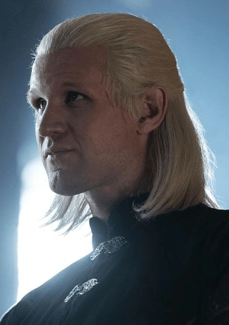

O time preto é composto pelos apoiadores mais leais da rainha Rhaenyra. Após o falecimento de sua esposa e seu filho recém nascido, o rei Viserys determinou que sua filha mais velha, Rhaenyra, seria a herdeira do trono de ferro de Westeros.
- Rainha Rhaenyra Targaryen
- Príncipe Daemon Targaryen 
- Princesa Rhaenys Targaryen
- Lorde Corlys Velaryon
- Príncipe Jacaerys Velaryon
- Príncipe Lucerys Velaryon
Um novo elenco, uma nova história, o mesmo universo da aclamada série "Game of Thrones"